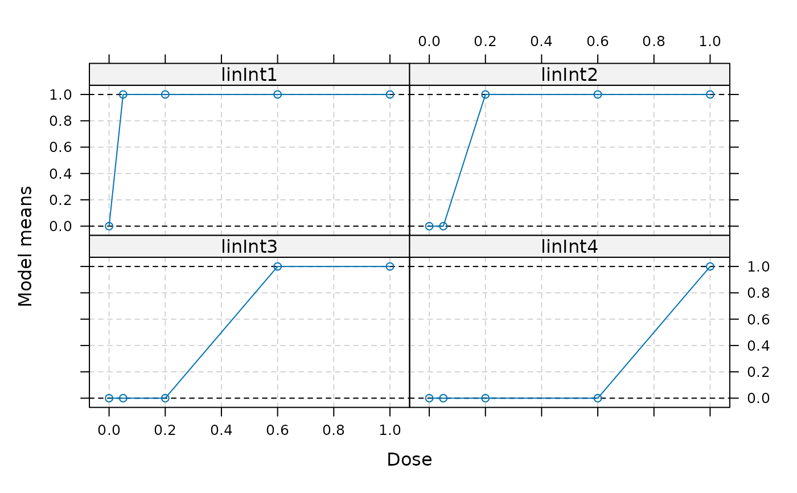
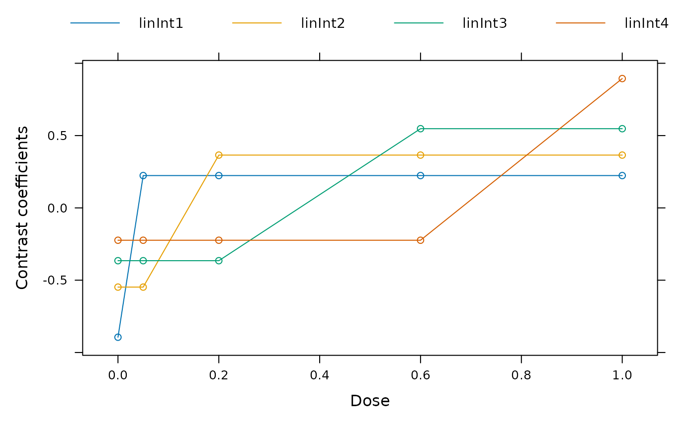

Performs multiple contrast test
MCTtest.RdThis function performs a multiple contrast test. The contrasts are
either directly specified in contMat or optimal contrasts
derived from the models argument. The directionality of the
data (i.e. whether an increase or decrease in the response variable is
beneficial is inferred from the models object, see
Mods).
For type = "normal" an ANCOVA model based on a homoscedastic normality assumption (with additive covariates specified in addCovars) is fitted.
For type = "general" it is assumed multivariate normally distributed estimates are specified in resp with covariance given by S, and the contrast test statistic is calculated based on this assumption. Degrees of freedom specified in df.
Usage
MCTtest(dose, resp, data = NULL, models, S = NULL, type = c("normal", "general"),
addCovars = ~1, placAdj = FALSE, alpha = 0.025, df = NULL,
critV = NULL, pVal = TRUE,
alternative = c("one.sided", "two.sided"), na.action = na.fail,
mvtcontrol = mvtnorm.control(), contMat = NULL)Arguments
- dose, resp
Either vectors of equal length specifying dose and response values, or names of variables in the data frame specified in data.
- data
Data frame containing the variables referenced in dose and resp if data is not specified it is assumed that dose and resp are variables referenced from data (and no vectors)
- models
An object of class Mods, see
Modsfor details- S
The covariance matrix of resp when type = "general", see Description.
- type
Determines whether inference is based on an ANCOVA model under a homoscedastic normality assumption (when type = "normal"), or estimates at the doses and their covariance matrix and degrees of freedom are specified directly in resp, S and df. See also
fitModand Pinheiro et al. (2014).- addCovars
Formula specifying additive linear covariates (for type = "normal")
- placAdj
Logical, if true, it is assumed that placebo-adjusted estimates are specified in resp (only possible for type = "general").
- alpha
Significance level for the multiple contrast test
- df
Specify the degrees of freedom to use in case type = "general". If this argument is missing df = Inf is used (which corresponds to the multivariate normal distribution). For type = "normal" the degrees of freedom deduced from the AN(C)OVA fit are used and this argument is ignored.
- critV
Supply a pre-calculated critical value. If this argument is NULL, no critical value will be calculated and the test decision is based on the p-values. If critV = TRUE the critical value will be calculated.
- pVal
Logical determining, whether p-values should be calculated.
- alternative
Character determining the alternative for the multiple contrast trend test.
- na.action
A function which indicates what should happen when the data contain NAs.
- mvtcontrol
A list specifying additional control parameters for the qmvt and pmvt calls in the code, see also
mvtnorm.controlfor details.- contMat
Contrast matrix to apply to the ANCOVA dose-response estimates. The contrasts need to be in the columns of the matrix (i.e. the column sums need to be 0).
Details
Integrals over the multivariate t and multivariate normal distribution are calculated using the mvtnorm package.
References
Hothorn, T., Bretz, F., and Westfall, P. (2008). Simultaneous Inference in General Parametric Models, Biometrical Journal, 50, 346–363
Pinheiro, J. C., Bornkamp, B., Glimm, E. and Bretz, F. (2014) Model-based dose finding under model uncertainty using general parametric models, Statistics in Medicine, 33, 1646–1661
Examples
## example without covariates
data(biom)
## define shapes for which to calculate optimal contrasts
modlist <- Mods(emax = 0.05, linear = NULL, logistic = c(0.5, 0.1),
linInt = c(0, 1, 1, 1), doses = c(0, 0.05, 0.2, 0.6, 1))
m1 <- MCTtest(dose, resp, biom, models=modlist)
## now calculate critical value (but not p-values)
m2 <- MCTtest(dose, resp, biom, models=modlist, critV = TRUE, pVal = FALSE)
## now hand over critical value
m3 <- MCTtest(dose, resp, biom, models=modlist, critV = 2.24)
## example with covariates
data(IBScovars)
modlist <- Mods(emax = 0.05, linear = NULL, logistic = c(0.5, 0.1),
linInt = c(0, 1, 1, 1), doses = c(0, 1, 2, 3, 4))
MCTtest(dose, resp, IBScovars, models = modlist, addCovars = ~gender)
#> Multiple Contrast Test
#>
#> Contrasts:
#> emax linear logistic linInt
#> 0 -0.894 -0.616 -0.894 -0.521
#> 1 0.207 -0.338 0.228 -0.573
#> 2 0.226 0.002 0.227 0.373
#> 3 0.225 0.315 0.217 0.357
#> 4 0.236 0.638 0.222 0.365
#>
#> Contrast Correlation:
#> emax linear logistic linInt
#> emax 1.000 0.715 1.000 0.617
#> linear 0.715 1.000 0.698 0.863
#> logistic 1.000 0.698 1.000 0.598
#> linInt 0.617 0.863 0.598 1.000
#>
#> Multiple Contrast Test:
#> t-Stat adj-p
#> emax 3.178 0.00187
#> logistic 3.164 0.00210
#> linear 2.640 0.01035
#> linInt 2.247 0.02764
## example using general approach (fitted on placebo-adjusted scale)
ancMod <- lm(resp~factor(dose)+gender, data=IBScovars)
## extract estimates and information to feed into MCTtest
drEst <- coef(ancMod)[2:5]
vc <- vcov(ancMod)[2:5, 2:5]
doses <- 1:4
MCTtest(doses, drEst, S = vc, models = modlist, placAdj = TRUE,
type = "general", df = Inf)
#> Multiple Contrast Test
#>
#> Contrasts:
#> emax linear logistic linInt
#> 1 0.462 -0.429 0.511 -0.672
#> 2 0.505 0.002 0.507 0.437
#> 3 0.504 0.400 0.485 0.418
#> 4 0.527 0.810 0.497 0.428
#>
#> Contrast Correlation:
#> emax linear logistic linInt
#> emax 1.000 0.715 1.000 0.617
#> linear 0.715 1.000 0.698 0.863
#> logistic 1.000 0.698 1.000 0.598
#> linInt 0.617 0.863 0.598 1.000
#>
#> Multiple Contrast Test:
#> t-Stat adj-p
#> emax 3.178 0.00187
#> logistic 3.164 0.00203
#> linear 2.640 0.00988
#> linInt 2.247 0.02681
## example with general alternatives handed over
data(biom)
## calculate contrast matrix for the step-contrasts
## represent them as linInt models
models <- Mods(linInt=rbind(c(1,1,1,1),
c(0,1,1,1),
c(0,0,1,1),
c(0,0,0,1)),
doses=c(0,0.05,0.2,0.6,1))
plot(models)

## now calculate optimal contrasts for these means
## use weights from actual sample sizes
weights <- as.numeric(table(biom$dose))
contMat <- optContr(models, w = weights)
## plot contrasts
plot(contMat)

## perform multiple contrast test
MCTtest(dose, resp, data=biom, contMat = contMat)
#> Multiple Contrast Test
#>
#> Contrasts:
#> linInt1 linInt2 linInt3 linInt4
#> 0 -0.894 -0.548 -0.365 -0.224
#> 0.05 0.224 -0.548 -0.365 -0.224
#> 0.2 0.224 0.365 -0.365 -0.224
#> 0.6 0.224 0.365 0.548 -0.224
#> 1 0.224 0.365 0.548 0.894
#>
#> Contrast Correlation:
#> linInt1 linInt2 linInt3 linInt4
#> linInt1 1.000 0.612 0.408 0.250
#> linInt2 0.612 1.000 0.667 0.408
#> linInt3 0.408 0.667 1.000 0.612
#> linInt4 0.250 0.408 0.612 1.000
#>
#> Multiple Contrast Test:
#> t-Stat adj-p
#> linInt2 3.418 0.00179
#> linInt3 2.780 0.01098
#> linInt1 2.486 0.02423
#> linInt4 1.753 0.11949
## example for using the Dunnett contrasts
## Dunnett contrasts
doses <- sort(unique(biom$dose))
contMat <- rbind(-1, diag(4))
rownames(contMat) <- doses
colnames(contMat) <- paste("D", doses[-1], sep="")
MCTtest(dose, resp, data=biom, contMat = contMat)
#> Multiple Contrast Test
#>
#> Contrasts:
#> D0.05 D0.2 D0.6 D1
#> 0 -1 -1 -1 -1
#> 0.05 1 0 0 0
#> 0.2 0 1 0 0
#> 0.6 0 0 1 0
#> 1 0 0 0 1
#>
#> Contrast Correlation:
#> D0.05 D0.2 D0.6 D1
#> D0.05 1.0 0.5 0.5 0.5
#> D0.2 0.5 1.0 0.5 0.5
#> D0.6 0.5 0.5 1.0 0.5
#> D1 0.5 0.5 0.5 1.0
#>
#> Multiple Contrast Test:
#> t-Stat adj-p
#> D1 2.680 0.0151
#> D0.6 2.617 0.0178
#> D0.2 2.066 0.0654
#> D0.05 0.497 0.6034